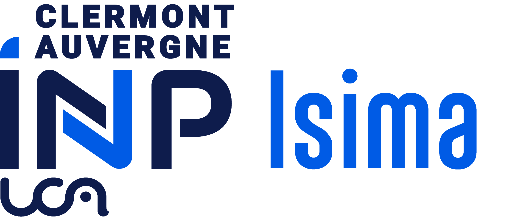
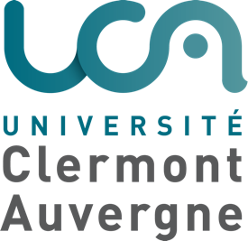
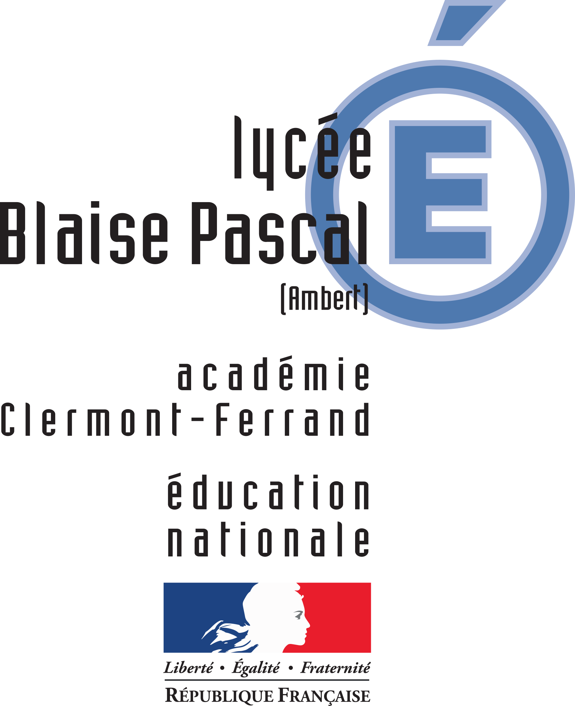
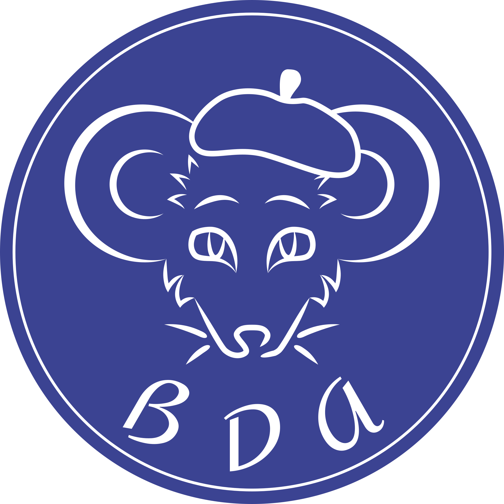
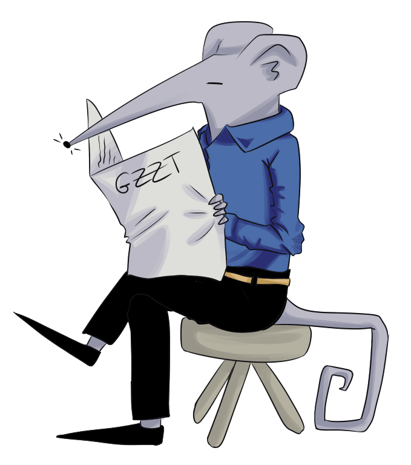
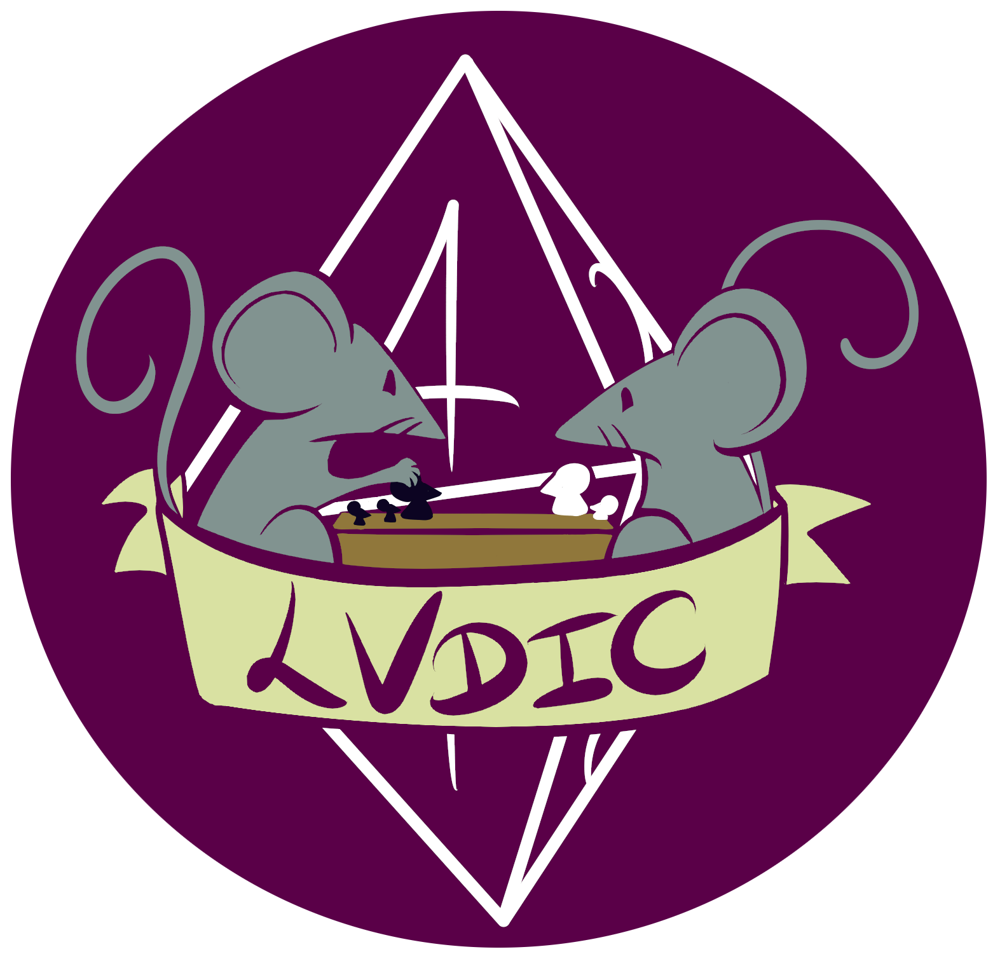

Bienvenue sur ma page personnelle ISIMA.
Je m'appelle Valentin PORTAIL. Depuis longtemps fasciné par l'outil informatique, j'ai commencé à apprendre la programmation au lycée. Après deux années de classe préparatoire intégrée, je suis actuellement en troisième année de cycle ingénieur sous statut étudiant à l'ISIMA, l'école d'ingénieurs en informatique de Clermont Auvergne INP.
Sur cette page personnelle, vous pourrez trouver plusieurs projets scolaires et personnels qui touchent à l'informatique.
Ce site est encore en construction. Ainsi, de nombreux éléments pourront encore évoluer.
2023 → 2026

Diplôme d'ingénieur sous statut étudiant
ISIMA, Clermont Auvergne INP, Clermont-Ferrand (Puy-de-Dôme)
2025
Semestre Erasmus+ - Master en Informatique
Università di Trento, Trente (Italie)
2021 → 2023

Prép'ISIMA - Licence Informatique (N1 + N2)
Université Clermont Auvergne, Clermont-Ferrand (Puy-de-Dôme)
2018 → 2021

Baccalauréat général, spécialités : Mathématiques, Numérique et Sciences Informatiques
Lycée polyvalent Blaise Pascal, Ambert (Puy-de-Dôme)
Voici un aperçu de quelques projets effectués au cours de ma scolarité. Une liste plus exhaustive de projets peut être trouvée en cliquant sur le bouton ci-dessous.
Développement d’une filmothèque en C# (30 heures)
UE "Services Web .NET/C#" - ISIMA 2
L'objectif du projet était d'implémenter à l'aide du framework .NET un site Web permettant à des utilisateurs d'interagir avec une base de données de films, de les ajouter à leurs favoris et de voir les films préférés des autres utilisateurs.
La partie Back-End était implémentée en ASP.NET. Elle contient une base de données contenant les films, les utilisateurs..., ainsi qu'une API permettant d'interagir avec la base. La partie Front-End a, quant à elle, été implémentée avec Blazor. Elle permet d'afficher à l'utilisateur plusieurs pages mises à jour dynamiquement en fonction de ses actions.
Ce projet a été coréalisé avec Axelle COMBE et Jean BOUYSSOUX.
Shogi & Stratego - Implémentation de jeux de société en C et SDL2 (60 heures)
Projet de fin d'année - ISIMA 1
L'objectif du projet était d'implémenter, en C et en SDL2, deux jeux de société. Nous avons choisi d'implémenter le Shogi, à informations complètes, et le Stratego, à informations partielles.
Une interface utilisateur graphique était également exigée pour chaque jeu. Enfin, plusieurs algorithmes devaient être mis en œuvre afin de permettre à l'ordinateur de jouer contre un joueur humain : Min-Max pour le premier jeu et Monte-Carlo Tree Search (MCTS) pour le second.
Ce projet a été coréalisé avec Pierre LEBRETON et Julian MELHA.
Ce projet a été conçu pour être exécuté sur Linux.
Lunatics - Développement d’un jeu-vidéo avec Unity (24 heures)
Projet de fin d'année - Prép'ISIMA 2
L'objectif était de réaliser un petit jeu-vidéo à l'aide du moteur Unity. Le jeu devait également inclure un système de génération procédurale.
Lunatics est un jeu de type tower defense avec plusieurs phases d'exploration. L'objectif est de défendre une centrale électrique attaquée par des monstres lunaires, les Moonsters.
Ce projet a été coréalisé avec Maxime BOURSIER, Matéu MIRADE et Robin VAN DE MERGHEL.
2024 → 2026

Membre actif
Bureau des Arts (BDA), ISIMA
2024 → 2026

Rédacteur
La GaZZette (Journal étudiant), ISIMA
2024 → 2025

Responsable Communication
Lvdic (Club de jeux de société), ISIMA